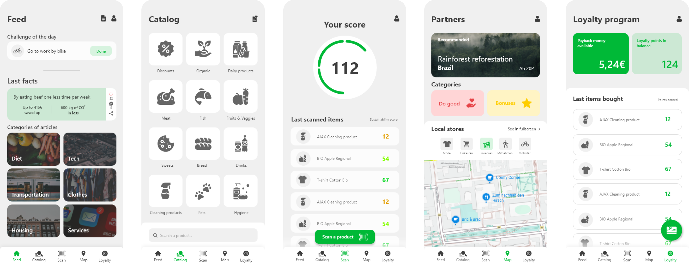

Rewards for shopping sustainably
As part of my semester at ESCP Business School for the Option Entrepreneurship, we were asked to help an existing start-up.
I chose to work as a UX/UI designer for them. They had an idea, but no app.
This is the app, followed by the landing page that I designed for them.
The application

The founders has original sketches with 12 differents menus for the app and a LOT of functionalities they wanted to implement.
I spent a lot of time prioritizing the features that would be the most interesting for the users.
Redesigning the logo
The landing page